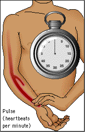

As you have seen, a pulse is measured as the distention of an artery that can be felt each time the heart contracts. Pulse is measured in number of beats per minute. You can measure pulse anywhere an artery passes close to the skin. Clinically, it is most common to measure heart rate in the radial artery on the inside of the wrist. The figure below shows you the procedure.
1. Place your index and middle fingers in the groove on the inside of the wrist. Just slide your fingers across the tendons until they slip into soft tissue. 
2. Wait until you clearly feel beats coming with a regular rhythm.
3. Count the number of beats for 15 seconds and multiply by 4 (or for 30 seconds and multiply by 2) to get the number of beats per minute.
 Continue to Design of the Experiment I.
Continue to Design of the Experiment I.